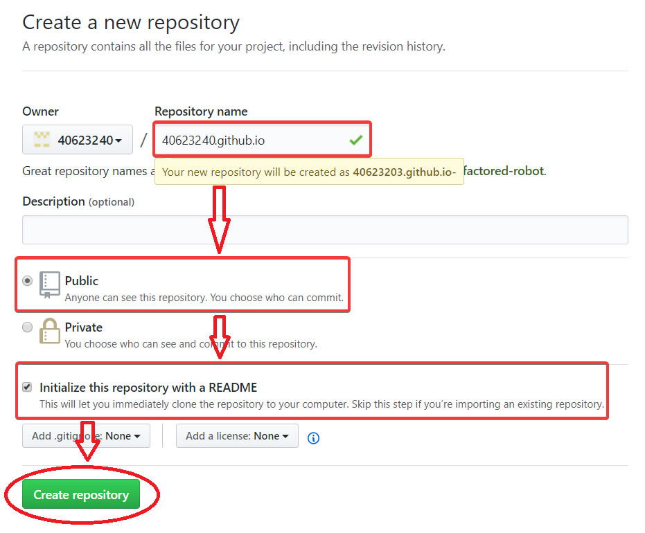
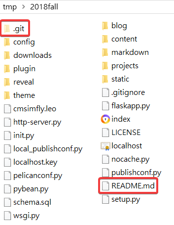
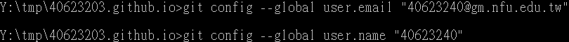
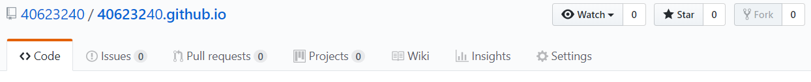
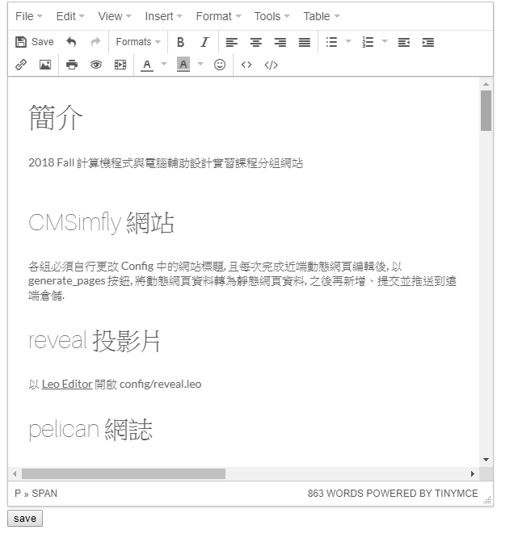

1.在github帳號下，新增一個New repository，命名為 : 學號.github.io

2.將自己的與老師的倉儲 clone下來

3.複製老師檔案， .git 和 README.me除外其他全部貼入
4.輸入git config，先email再來是username，並且在home>.gticonfig中確認是否正確

5.用 git status 所有檔案，再 git add . > git commit -m "自訂" >git push ，推上剛剛更新的東西

6.開啟python wsgi.py，編輯內容
